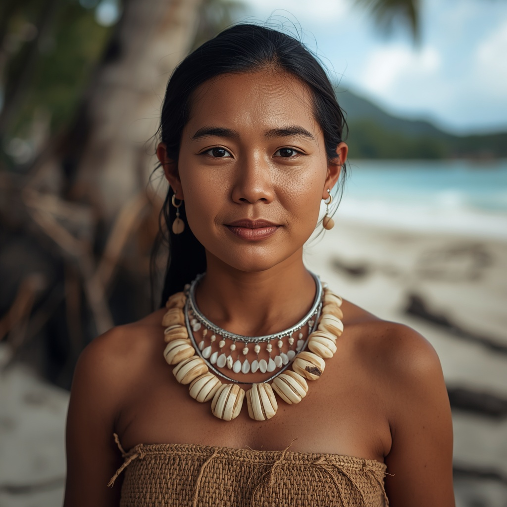

🧑🤝🧑 世界の民族・人びと
People of the World。国境を越えて暮らす人びとを、地域ごとに紹介します。伝統だけでなく、今の暮らしも一緒に。

ミクロネシア人
🗣 使用言語
各島の現地語(パラオ語、マーシャル語、ギルバート語など)、英語
👥 人口の目安
ミクロネシア連邦、パラオ、マーシャル諸島、キリバス、ナウルを合わせて約20万人
👘 伝統衣装
伝統的には植物繊維で編んだスカート状の腰布や花冠が用いられ、儀礼の際には貝殻やココナツ繊維を使った装飾品を身につける。
🏠 住居
サンゴ礁の環礁や火山島の環境に応じて、木材とヤシの葉を用いた高床式の家屋や共同の集会場が伝統的な住居として建てられてきた。
🍲 食文化
タロイモやパンノキ、ココナツ、魚介類を中心とした食文化を持ち、限られた資源を活かした保存食(発酵パンノキなど)の知恵も発達している。
🎵 音楽・踊り
詠唱と身振りを伴う伝統舞踊や、星や波、鳥の動きを読んで大洋を渡る優れた航海術とそれにまつわる歌や伝承が受け継がれている。
🎉 行事・祭り
各島の首長制や親族制度に基づく祝宴、収穫祭、独立記念日などの行事が行われ、伝統舞踊や手工芸品の展示が催される。
🙏 信仰・価値観
現在はキリスト教(カトリックやプロテスタント)が広く信仰されているが、伝統的な航海術や首長制度、親族関係を重んじる価値観も社会の基盤として残っている。
📜 歴史
ミクロネシアの島々には数千年前からオーストロネシア語族の航海民が定住し、独自の環礁社会や航海文化を築いた。近代以降はスペイン、ドイツ、日本、米国など複数の外国勢力による統治を経験し、それぞれ独立の道を歩んだ。
🏙 現代の暮らし
現在は独立国家または自由連合国として、伝統的な漁業・農業に加え、援助経済や観光業、海外への移住労働も生活を支えている。
🇯🇵 日本との関係
第一次世界大戦後から第二次世界大戦終結まで日本はミクロネシアの島々(パラオなど)を「南洋群島」として統治し、南洋庁を置いて統治を行った歴史があり、現在も現地には日本統治時代の建造物や日本語由来の言葉、日本との戦跡巡礼や文化交流が残っている。
🌍 関連する国


出典: https://en.wikipedia.org/wiki/South_Seas_Mandate(2026-09-01時点) / https://www.britannica.com/place/Micronesia-cultural-region-Pacific-Ocean(2026-09-01時点) / https://unseen-japan.com/japan-forgotten-colonies-micronesia/(2026-09-01時点)